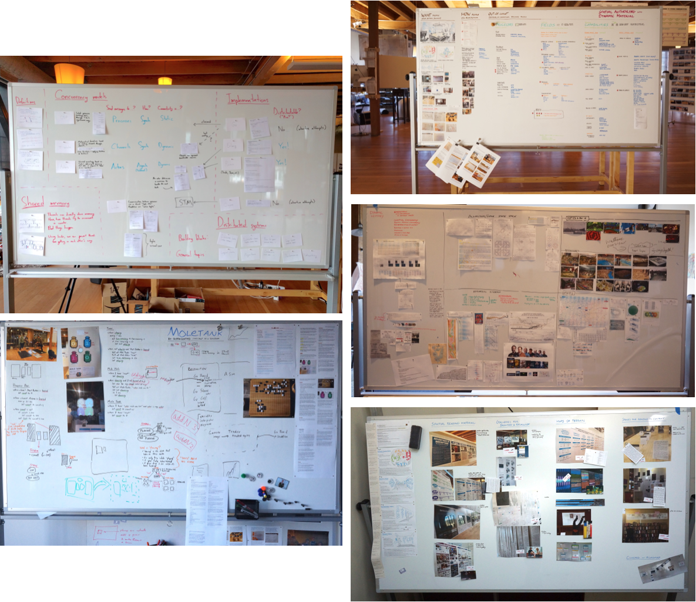
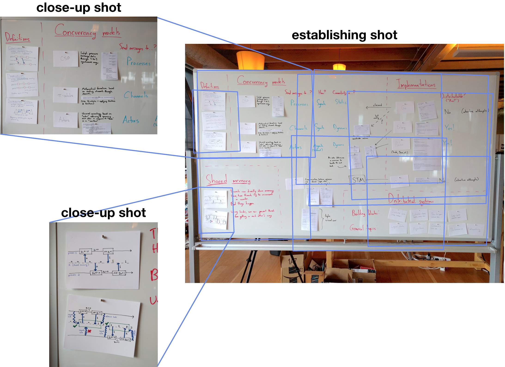

Some members of my research group like to communicate their thoughts in the form of whiteboard collages.
(Think of these as poster-sized documents, made of scraps of paper and hand-written marks.)
These collages serve as fertile ground for organizing and sharing ideas, but at some point, the whiteboard substrate needs to be repurposed for the next collage. So I built a system called whiteboard-stitch to digitally archive these documents by stitching together photographs.

This is a whiteboard I made which surveys the basics of concurrency. Try zooming in on a paper card. You will be able to make out details far smaller than could be captured with a single photo.
To stitch together a high-resolution image of a whiteboard, you need an establishing shot of the whole board, together with close-up shots which capture the details you care about.
The first thing the system does is determine how each close-up shot lies inside of the establishing shot. It does this by finding SIFT features and then searching for homographies using matching features.

Once all the close-up shots are aligned, they can be stitched together. whiteboard-stitch uses a detail-transfer technique to move details from the close-up shots to the establishing shot, while maintaining the consistent color and lighting of the establishing shot. (In this process,more-close shots are prioritized over less-close ones.) After feathering the edges of the transferred regions, the final, high-resolution image is ready.
To display the whiteboards in a zoomable interface, Deep Zoom image pyramids are prepared from each whiteboard, and viewed using the OpenSeadragon library.
The source code to whiteboard-stitch is freely available for study. However, it is not packaged for turn-key operation, and you should not expect:
Thanks to the Dynamic Medium Group for supporting this work. Thanks especially to Toby Schachman for his collaboration and technical assistance.